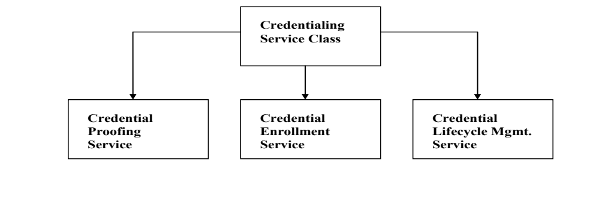
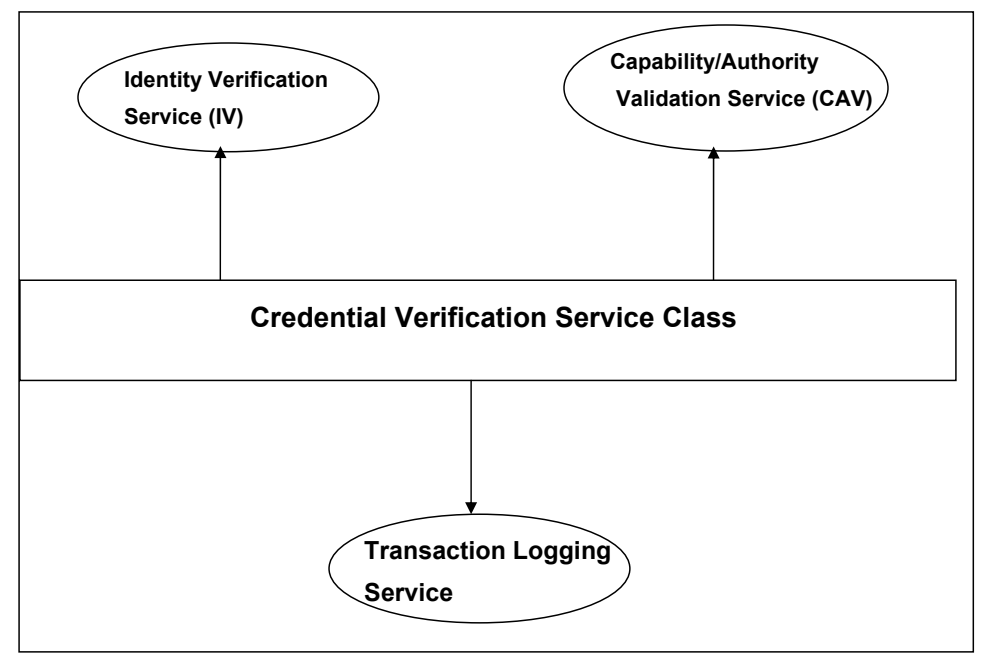

NIST IR 7601 日本語訳
英語タイトル : Framework for Emergency Response Officials (ERO): Authentication and Authorization Infrastructure日本語タイトル : 緊急対応担当官（ERO）の認証・認可基盤のフレームワーク
公開日 : 2010-08-31
原文URL : https://csrc.nist.gov/pubs/ir/7601/final
翻訳編集 : 自動生成（有志による非公式の日本語訳）, 原文取得日 : 2026-10-31, 訳文 : 144 / 145 ブロック
[要約] NIST IR 7601 は、信頼でき、相互運用可能な Emergency Response Official Authentication and Authorization（ERO-AA）基盤の設計と実装の青写真となる、概念的なフレームワークを定義する報告書です。ERO-AA 基盤の主な目的は、テロ攻撃や自然災害の現場にいる初動対応者である緊急対応担当官（ERO）について、相互運用可能で安全かつ信頼できる認証と、それに続く必要なタスクへの認可を行うことです。フレームワークは、クレデンシャル発行、識別情報検証・属性検証、信頼フェデレーションという 3 つの主要なサービスクラスの下にある構成要素サービスを詳細に説明し、識別情報クレデンシャル、属性クレデンシャル、配備認可クレデンシャルの確立、伝達、検証をサポートします。既存のデジュール標準とデファクト標準を可能な限り利用することを前提としており、既存の標準と新たに現れる仕様の活用についても述べています。
［NIST のロゴ。公的な標章のため、この非公式サイトには掲載していません。原本 PDF を参照してください。］
NIST Interagency Report 7601
NIST Interagency Report 7601
Framework for Emergency Response Officials (ERO) Authentication and Authorization Infrastructure
緊急対応担当官（ERO）の認証・認可基盤のフレームワーク
Ramaswamy Chandramouli
Teresa Schwarzhoff
Ramaswamy Chandramouli
Teresa Schwarzhoff
NIST Interagency Report 7601
NIST Interagency Report 7601
Framework for Emergency Response Official (ERO) Authentication and Authorization Infrastructure
緊急対応担当官（ERO）の認証・認可基盤のフレームワーク
Ramaswamy Chandramouli
Teresa Schwarzhoff
Ramaswamy Chandramouli
Teresa Schwarzhoff
COMPUTER SECURITY
コンピュータセキュリティ
Computer Security Division
Information Technology Laboratory
National Institute of Standards and Technology
Gaithersburg, MD 20899-8930
コンピュータセキュリティ部門
情報技術研究所
米国国立標準技術研究所
Gaithersburg, MD 20899-8930
August 2010
2010年8月
U.S. Department of Commerce
Gary Locke, Secretary
米国商務省
Gary Locke 長官
National Institute of Standards and Technology
Dr. Patrick D. Gallagher, Director
米国国立標準技術研究所
Dr. Patrick D. Gallagher 所長
REPORTS ON COMPUTER SYSTEMS TECHNOLOGY
コンピュータシステム技術に関する報告書
The Information Technology Laboratory (ITL) at the National Institute of Standards and Technology (NIST) promotes the U.S. economy and public welfare by providing technical leadership for the Nation’s measurement and standards infrastructure. ITL develops tests, test methods, reference data, proof of concept implementations, and technical analysis to advance the development and productive use of information technology. ITL’s responsibilities include the development of technical, physical, administrative, and management standards and guidelines for the cost-effective security and privacy of sensitive unclassified information in Federal computer systems. This Interagency Report discusses ITL’s research, guidance, and outreach efforts in computer security and its collaborative activities with industry, government, and academic organizations.
米国国立標準技術研究所（NIST）の情報技術研究所（ITL）は、米国の計測・標準基盤に技術面でリーダーシップを発揮し、米国の経済と公共の福祉を推進しています。ITL は、情報技術の発展と生産的な利用を促進するため、試験、試験方法、参照データ、概念実証の実装、技術分析を開発しています。ITL の責務には、連邦コンピュータシステムにおける機密扱いでない取扱注意情報の、費用対効果の高いセキュリティとプライバシーを実現するための技術標準、物理標準、管理標準および運用管理標準、ならびにガイドラインの開発が含まれます。この Interagency Report は、コンピュータセキュリティにおける ITL の研究、ガイダンス、普及活動と、産業界、政府、学術機関との協力活動について論じています。
National Institute of Standards and Technology Interagency Report 7601, 18 pages (August 2010)
National Institute of Standards and Technology Interagency Report 7601、18 ページ（2010年8月）
Certain commercial entities, equipment, or materials may be identified in this document in order to describe an experimental procedure or concept adequately. Such identification is not intended to imply recommendation or endorsement by the National Institute of Standards and Technology, nor is it intended to imply that the entities, materials, or equipment are necessarily the best available for the purpose.
本書では、実験の手順や概念を適切に説明するために、特定の商業的組織、機器、資材が示されている場合があります。そのような記載は、米国国立標準技術研究所による推奨や保証を意味するものではなく、それらの組織、資材、機器が当該目的に利用可能な最良のものであると必ずしも意味するものでもありません。
Acknowledgements
謝辞
The authors, Ramaswamy Chandramouli and Teresa Schwarzhoff of the National Institute of Standards and Technology wish to thank their colleagues who reviewed drafts of this document and contributed to its development.
著者である米国国立標準技術研究所の Ramaswamy Chandramouli と Teresa Schwarzhoff は、本書の草案をレビューし、その作成に貢献してくれた同僚に感謝します。
Executive Summary
エグゼクティブサマリー
The purpose of an identity system is to enable individuals to be distinguished from each other in a trustworthy manner. The process of distinguishing one person within a group of people is referred to as identification. The process of repetitively affirming the identity of a specific person is termed authentication. A capability to reliably authenticate individuals at different times and in different places allows information to be attributed to each individual in a correspondingly trustworthy manner. This attribution of additional information (in addition to those required for asserting the identity) forms the basis for authorization of that individual to perform certain tasks. The collection of information used for authentication and subsequently for authorization is called credentials. Jurisdictions, through the issuance of credentials, thus can grant and convey recognition of various levels of capability or authority to be exercised by the individual. If there exists an infrastructure for secure exchange of credentials and creation of trust in these credentials, it provides the capability to establish mutual trust and by extension a circle of trust. In this document we describe a framework for establishing such an infrastructure for authentication and authorization of Emergency Response officials (ERO) who respond to various types of man-made and natural disasters. We refer to this infrastructure using the acronym ERO-AA that stands for Emergency Response Official Authentication and Authorization.
識別情報システムの目的は、個人を互いに信頼できる方法で区別できるようにすることです。集団の中である人物を他の人々と見分けるプロセスを識別と呼びます。特定の人物の識別情報を繰り返し確認するプロセスを認証と呼びます。異なる時点や場所で個人を確実に認証できれば、それに応じて信頼できる形で情報を各個人に帰属させることができます。識別情報を主張するために必要な情報に加えて、追加情報をその個人に帰属させることが、その個人が特定のタスクを実行するための認可の基礎となります。認証に使用され、その後認可にも使用される情報の集合をクレデンシャルと呼びます。このように、管轄当局は、クレデンシャルを発行することで、個人が行使する能力や権限のさまざまな水準を承認し、付与できます。クレデンシャルを安全に交換し、クレデンシャルへの信頼を確立する基盤があれば、相互信頼、ひいては信頼の輪を確立できます。本書では、さまざまな種類の人為的災害および自然災害に対応する緊急対応担当官（Emergency Response Officials: ERO）の認証と認可のための基盤を確立するフレームワークについて説明します。この基盤を、Emergency Response Official Authentication and Authorization を表す頭字語 ERO-AA で呼びます。
The population of individuals authenticated and authorized under ERO-AA infrastructure include: Federal Emergency Response Officials (FEROs), State/Local/Tribal/Private Sector Emergency Response Officials (SLTP-EROs) and the FEMA Disaster Reserve Workforce (DRW). The system supports the establishment, conveyance and validation of Identity Credentials (ICs), Attribute Credentials (ATs) and Deployment Authorization Credentials (DAC). Apart from enumeration of the types of EROs and their associated authority domains (called major players) and types of credentials, the conceptualization of the framework for ERO-AA infrastructure includes detailed description of various component services under three major service classes: Credentialing Service Class, Identity Verification and Attribute Validation Service Class and Trust Federation Service Class.
ERO-AA 基盤で認証され認可される個人の母集団には、連邦の緊急対応担当官（Federal Emergency Response Officials: FEROs）、州・地方・部族・民間部門の緊急対応担当官（State/Local/Tribal/Private Sector Emergency Response Officials: SLTP-EROs）、FEMA の Disaster Reserve Workforce（DRW）が含まれます。このシステムは、識別情報クレデンシャル（Identity Credentials: ICs）、属性クレデンシャル（Attribute Credentials: ATs）、配備認可クレデンシャル（Deployment Authorization Credentials: DAC）の確立、伝達、検証をサポートします。ERO の種類とそれに関連する権限ドメイン（主要な関与者と呼びます）とクレデンシャルの種類の列挙に加えて、ERO-AA 基盤のフレームワークの概念化には、3 つの主要なサービスクラス、すなわち、クレデンシャル発行サービスクラス、識別情報検証・属性検証サービスクラス、信頼フェデレーションサービスクラスの下にある、さまざまな構成要素サービスの詳細な説明が含まれます。
The framework is predicated upon the use of trusted tokens capable of supporting biometric as well as secret key based identity authentication. It anticipates the use of various credential mechanisms, specifically including digital certificates, for the trusted conveyance of identification, capability and authority information. The framework is further predicated upon adherence to both technical as well as procedural standards. To the greatest extent possible, existing de jure as well as de facto standards will be utilized. When absolutely necessary, enhancements to existing standards or the development of new standards will be suggested.
このフレームワークは、生体情報による識別情報の認証と、共通鍵に基づく識別情報の認証の両方をサポートできる、信頼できるトークンの使用を前提としています。識別情報、能力、権限の情報を信頼できる形で伝達するために、特にデジタル証明書を含む、さまざまなクレデンシャルのメカニズムの使用を想定しています。このフレームワークは、技術標準と手続き上の標準の両方への準拠も前提としています。可能な限り、既存のデジュール標準とデファクト標準を利用します。どうしても必要な場合には、既存の標準の拡張や新しい標準の策定を提案します。
While the framework is specifically targeted at the indicated officials and their corresponding credentials, exploiting a standards based architecture will allow an orderly evolution of capabilities and authorities.
このフレームワークは、特に示された担当官とそれに対応するクレデンシャルを対象としていますが、標準に基づくアーキテクチャを活用することで、能力と権限を秩序立てて進化させることができます。
Table of Contents
目次
List of Figures
図の一覧
1. Overview
1. 概要
This document defines the conceptual framework that will provide the blueprint for the design and implementation of a trusted, interoperable Emergency Response Official Authentication and Authorization (ERO-AA) Infrastructure.
本書は、信頼でき、相互運用可能な Emergency Response Official Authentication and Authorization（ERO-AA）基盤の設計と実装の青写真となる、概念的なフレームワークを定義します。
The primary purpose of the ERO-AA infrastructure is interoperable secure and reliable authentication and subsequent authorization to needed tasks of first responders, referred to Emergency Response Officials or EROs, at sites that are the scene of a terrorist attack or natural disaster. These are generically referred to as Emergency Incident sites in this document. The official responsible for the authentication and authorization functions is referred to as the Incident Commander. The organization to which EROs are affiliated is referred to Emergency Management Agency (EMA).
ERO-AA 基盤の主な目的は、テロ攻撃や自然災害の現場にいる、緊急対応担当官（Emergency Response Officials: ERO）と呼ばれる初動対応者について、相互運用可能で安全かつ信頼できる認証と、それに続く必要なタスクへの認可を行うことです。これらの現場は、本書では総称して緊急インシデント現場と呼びます。認証と認可の機能に責任を持つ担当官は、インシデント指揮官と呼びます。ERO が所属する組織は、緊急事態管理機関（Emergency Management Agency: EMA）と呼びます。
It is anticipated that the following will be major players in the ERO-AA infrastructure:
ERO-AA 基盤では、次が主要な関与者になると想定されます。
Federal Agencies (other than FEMA) that maintain a contingent of employees who are deployed for emergency management tasks (e.g., Center for Disease Control, Pentagon)
緊急事態管理のタスクのために配備される職員の要員を維持している（FEMA 以外の）連邦機関（例: Center for Disease Control、Pentagon）
State/Local/Tribal Emergency Management agencies
州・地方・部族の緊急事態管理機関
Private sector (both for-profit and volunteer) providers of emergency management services
緊急事態管理サービスの民間部門（営利とボランティアの両方）の提供者
Federal Emergency Management Agency (FEMA) under the federal Department of Homeland Security (DHS)
連邦の国土安全保障省（DHS）の下にある連邦緊急事態管理庁（Federal Emergency Management Agency: FEMA）
The framework envisages an infrastructure that performs the function of authentication and authorization of EROs using a combination of credentials in trusted tokens and trusted back-end data repositories. The reason for the choice of trusted tokens, such as contact or contactless smart cards, is that their inherent security characteristics offer highly resilient trusted platforms for information storage and support of standardized interfaces. The trust in the data residing in back-end repositories has to be established by building a federation or a circle of trust among the ERO-AA infrastructure players and the integrity of the data retrieved from those repositories has to be ensured through use of secure communication protocols..
このフレームワークは、信頼できるトークンのクレデンシャルと、信頼できるバックエンドのデータリポジトリの組合せを用いて、ERO の認証と認可の機能を実行する基盤を想定しています。接触型または非接触型のスマートカードのような信頼できるトークンを選択する理由は、その固有のセキュリティ特性が、情報の格納と標準化されたインタフェースのサポートのための、非常に耐障害性の高い信頼できるプラットフォームを提供することです。バックエンドのリポジトリにあるデータへの信頼は、ERO-AA 基盤の関与者の間にフェデレーションまたは信頼の輪を構築することによって確立しなければならず、それらのリポジトリから取得されるデータの完全性は、安全な通信プロトコルの使用によって確保しなければなりません。
From the prospective of authentication and authorization functions, any player in the ERO-AA infrastructure, irrespective of the location and nature of an emergency incident, will be playing one of the following two major roles:
認証と認可の機能の観点からは、ERO-AA 基盤の関与者は、緊急インシデントの場所や性質にかかわらず、次の 2 つの主要な役割のいずれかを担います。
Credential & Token Issuer - the authoritative source for credentials and credential-bearing tokens, such as smart cards, and hence referred to as Authoritative Source of Credentials (ASC).
クレデンシャルおよびトークンの発行者 - クレデンシャルと、スマートカードなどのクレデンシャルを持つトークンの権威あるソースであり、そのため、クレデンシャルの権威あるソース（Authoritative Source of Credentials: ASC）と呼びます。
The Authenticating entity or the Relying Party (RP) which is usually the Incident Commander and his/her supporting staff at the Emergency incident or preparedness center.
認証する主体、すなわち依拠当事者（Relying Party: RP）。通常は、緊急インシデント現場または準備センターにいるインシデント指揮官と、その支援要員です。
As the nature of interaction among the ERO-AA infrastructure players is mutual aid, an entity that plays the role of ASC in one incident could play the role of RP in another incident depending upon the designated jurisdictional authority for the event. To support the functions needed to be performed by the above two major roles, the service layer of the ERO-AA infrastructure should provide the following three major service classes. They are:
ERO-AA 基盤の関与者の間のやり取りの性質は相互援助であるため、あるインシデントで ASC の役割を担う主体が、事象について指定された管轄当局に応じて、別のインシデントでは RP の役割を担うことがあります。上記 2 つの主要な役割が実行する必要のある機能を支えるために、ERO-AA 基盤のサービス層は、次の 3 つの主要なサービスクラスを提供すべきです。それらは次のとおりです。
Credentialing Service Class
クレデンシャル発行サービスクラス
Credential Verification Service Class
クレデンシャル検証サービスクラス
Trust Federation Service Class
信頼フェデレーションサービスクラス
Each of the service classes has many component services and are described in greater detail in subsequent sections.
各サービスクラスには多くの構成要素サービスがあり、以降の節でより詳しく説明します。
The Credentialing Service class consists of services that provide for the reliable attribution of information to authenticate persons through the use of various credentials. The information attributed to a person encompasses a wide variety of uses. It may consist of a data that provides unambiguous identity through a pseudonym or a data pertaining to a personal trait such as fingerprint biometric. It may convey authority, for example reliably establishing that a specific person is a law-enforcement official or a medical physician; each being a position that imbues that person with well defined rights and privileges such as the right to make arrests or to administer a medical treatment. The information might convey certification, for example reliably establishing that a specific person is licensed to operate heavy (construction) equipment or fly fixed-wing or rotary aircraft. The information might convey personal characteristics of the specific person, for example a record of inoculations or allergies.
クレデンシャル発行サービスクラスは、さまざまなクレデンシャルの使用を通じて、人を認証するための情報を確実に帰属させるサービスで構成されます。人に帰属させる情報は、幅広い用途を含みます。それは、仮名による明確な識別情報を提供するデータであったり、指紋の生体情報のような個人の特徴に関するデータであったりします。それは、たとえば、特定の人物が法執行官や医師であることを確実に確立するなど、権限を伝えることがあります。いずれも、逮捕を行う権利や医療行為を行う権利など、明確に定義された権利と特権をその人物に与える地位です。その情報は、たとえば、特定の人物が（建設用の）重機を操作する、または固定翼機や回転翼機を操縦する免許を持っていることを確実に確立するなど、資格を伝えることがあります。その情報は、たとえば予防接種やアレルギーの記録など、特定の人物の個人的な特徴を伝えることもあります。
The Credential Verification Service class provides services that facilitate a general interaction framework that encompasses (or is an integral part of) a basic identity system. These services facilitate not only reading of identity credentials from tokens but also retrieval from other sources such as back-end repositories for credentials such as qualifications/ skill sets (referred to as attributes in this document) and deployment authorizations. It provides for the repetitive authentication of individuals, establishment of trustworthy authority characteristics of those individuals and recording the relevant details of the interaction. This logging of interactions forms a base for developing local reputation for respondents and allows for post-interaction consequences of the interaction to be applied.
クレデンシャル検証サービスクラスは、基本的な識別情報システムを包含する（またはその不可欠な一部である）汎用的なやり取りの枠組みを促進するサービスを提供します。これらのサービスは、トークンからの識別情報クレデンシャルの読み取りだけでなく、資格や技能の集合（本書では属性と呼びます）や配備の認可といったクレデンシャルについて、バックエンドのリポジトリなどの他のソースからの取得も促進します。個人の繰り返しの認証、それらの個人の信頼できる権限の特性の確立、やり取りの関連する詳細の記録を提供します。このやり取りのログ記録は、対応者についての地域の評判を築く基礎となり、やり取りの事後の結果を適用することを可能にします。
The Trust Federation Service class provides services that will enable one ERO-AA infrastructure player (playing the role of Relying Party) to establish trust in the credentials issued by another player (playing the role of Authoritative Source) so as to authenticate an unknown ERO and authorize that person to perform the appropriate task at the incident site dependent on that person’s capability, licensing, certification etc. Each ERO-AA infrastructure player joining the trust federation should execute some pre-defined agreements and meet some quality of service metrics. In our context, many of the metrics pertain to the services under Credentialing Service Class.
信頼フェデレーションサービスクラスは、ある ERO-AA 基盤の関与者（依拠当事者の役割を担う）が、別の関与者（権威あるソースの役割を担う）が発行したクレデンシャルへの信頼を確立し、見知らぬ ERO を認証して、その人物の能力、免許、資格などに応じて、インシデント現場で適切なタスクを実行する認可を与えられるようにするサービスを提供します。信頼フェデレーションに加わる各 ERO-AA 基盤の関与者は、あらかじめ定められた合意をいくつか実行し、サービス品質の指標をいくつか満たすべきです。本書の文脈では、指標の多くは、クレデンシャル発行サービスクラスのサービスに関するものです。
It is important at this stage to point out some customer facing applications into which some of the key component services in each of the three service classes are packaged. They are:
この段階で、3 つのサービスクラスのそれぞれの主要な構成要素サービスのいくつかがパッケージ化される、顧客向けのアプリケーションをいくつか指摘しておくことが重要です。それらは次のとおりです。
Credential Enrollment Application
クレデンシャル登録アプリケーション
Token Issuing Application
トークン発行アプリケーション
Credential Verification Application
クレデンシャル検証アプリケーション
The credential enrollment application is a package of some services from the Credentialing Service Class. These services include vetting of identity-proofing documents, capture of identity credentials (such as fingerprint biometric) and ERO attributes (such as licensing and certification documents issued by proper authorities). The credential enrollment application facilitates transmission of this information to the respective back-end data repositories through protocols and interfaces within a secure messaging system.
クレデンシャル登録アプリケーションは、クレデンシャル発行サービスクラスのサービスのいくつかをまとめたパッケージです。これらのサービスには、身元確認書類の審査、識別情報クレデンシャル（指紋の生体情報など）と ERO の属性（適切な機関が発行した免許や資格の書類など）の取得が含まれます。クレデンシャル登録アプリケーションは、安全なメッセージングシステム内のプロトコルとインタフェースを通じて、この情報をそれぞれのバックエンドのデータリポジトリへ送信することを促進します。
The token issuing application makes use of the provisioning service features under the Credentialing Service Class to perform functions necessary for personalization of a token to be issued to an ERO, such as getting the credentials attested by the trusted authority and populating the token with personalized credentials through a secure process.
トークン発行アプリケーションは、クレデンシャル発行サービスクラスのプロビジョニングサービスの機能を利用して、ERO に発行するトークンの個人化に必要な機能を実行します。たとえば、信頼できる機関によるクレデンシャルのアテステーションを得ること、安全なプロセスで、個人化されたクレデンシャルをトークンに書き込むことです。
The credential verification application provides capabilities for retrieval of credentials from the ERO tokens, identification of the token bearer through interaction mechanisms with the token reader (such as entering a PIN or providing fingerprints), and various protocols for validation of credentials through back-end trust broker systems. Depending upon the trust level required for ERO authentication in incident scenarios, this application has to support multiple authentication use cases and correspondingly the subset of capabilities enumerated above may vary as well from one application to another. If the use case calls for only simple visual authentication and credential validation, the credentialing verification application may be a simple laptop application that displays the token holder’s photograph, and other identifying and attribute information such as an ERO designator code from a trusted token. In this instance, the use case may be calling for verification of visual identity credentials and verification of attributes (such as qualification/ skill sets) through ERO designators on the token. If the highest level of trust in authentication of an ERO is required, the use case involving strong binding between the bearer and the token and high levels of credibility in an ERO’s attributes may be required. In this scenario, the credential verification application has to support features such as biometric authentication and secure federated protocols from retrieving and validating attribute information from remote back-end repositories respectively for meeting these requirements.
クレデンシャル検証アプリケーションは、ERO のトークンからクレデンシャルを取得する能力、トークンリーダーとのやり取りのメカニズム（PIN の入力や指紋の提示など）によるトークン保持者の識別、バックエンドの信頼ブローカーシステムを通じたクレデンシャルの検証のためのさまざまなプロトコルを提供します。インシデントのシナリオでの ERO の認証に必要な信頼水準によっては、このアプリケーションは複数の認証ユースケースをサポートしなければならず、それに応じて、上に列挙した能力の部分集合もアプリケーションごとに異なる場合があります。ユースケースが単純な目視による認証とクレデンシャルの検証だけを求める場合、クレデンシャル検証アプリケーションは、信頼できるトークンから、トークン保持者の写真や、ERO 指定コードなどのその他の識別情報や属性情報を表示する、単純なノート PC のアプリケーションでもよい場合があります。この場合、ユースケースは、目視による識別情報クレデンシャルの確認と、トークン上の ERO 指定コードを通じた属性（資格や技能の集合など）の確認を求めている場合があります。ERO の認証で最高水準の信頼が必要な場合、保持者とトークンの強い結び付きと、ERO の属性についての高い信頼性を伴うユースケースが必要になる場合があります。このシナリオでは、クレデンシャル検証アプリケーションは、これらの要件を満たすために、生体認証や、リモートのバックエンドリポジトリから属性情報をそれぞれ取得して検証するための安全なフェデレーションプロトコルなどの機能をサポートしなければなりません。
1.1 ERO Types
1.1 ERO の種類
The EROs encompassed within the scope of this framework include the following types:
このフレームワークの適用範囲に含まれる ERO には、次の種類があります。
Federal Emergency Response Officials (FEROs): This includes all employees and contractors employed by a federal agency who perform functions related to: (a) National Response Framework (NRF), (b) National Infrastructure Protection Plan (NIPP), (c) National Continuity Policy Implementation Plan (NCP/IP), and/or (d) National Incident Management System (NIMS).
連邦の緊急対応担当官（Federal Emergency Response Officials: FEROs）: 連邦機関に雇用され、(a) National Response Framework（NRF）、(b) National Infrastructure Protection Plan（NIPP）、(c) National Continuity Policy Implementation Plan（NCP/IP）、または (d) National Incident Management System（NIMS）（あるいはそれらの複数）に関連する機能を実行する、すべての職員と請負業者を含みます。
State/Local/Tribal/Private Sector Emergency Response Officials (SLTP-ERO): This includes emergency response officials from state, local, tribal and private sectors who must access Joint Field offices or other Federal facilities under disaster response situations.
州・地方・部族・民間部門の緊急対応担当官（State/Local/Tribal/Private Sector Emergency Response Officials: SLTP-ERO）: 災害対応の状況で Joint Field offices などの連邦施設にアクセスしなければならない、州、地方、部族、民間部門の緊急対応担当官を含みます。
FEMA Disaster Reserve Workforce (DRW): This includes the FEMA’s permanent and reserve workforce assigned to perform tasks in any national disaster, whether a natural or terrorism-related.
FEMA Disaster Reserve Workforce（DRW）: 自然災害かテロ関連かを問わず、あらゆる国家的な災害でタスクを実行するよう割り当てられた、FEMA の常勤の要員と予備の要員を含みます。
The framework assumes that each type is based on the issuance of tokens to individuals encompassed by the respective domain. While the capabilities of such tokens may vary, it is assumed that they will evolve in the direction of providing at least trusted Identification, Authentication and (electronic) Signature (IAS) capabilities.
このフレームワークは、各種類が、それぞれのドメインに含まれる個人へのトークンの発行に基づいていることを前提としています。そのようなトークンの能力は異なる場合がありますが、少なくとも、信頼できる識別（Identification）、認証（Authentication）、（電子）署名（Signature）（IAS）の能力を提供する方向へ進化すると想定されます。
Reference to ERO throughout this document refers to all three types.
本書全体で ERO という場合は、3 つの種類すべてを指します。
1.2 Credential Types
1.2 クレデンシャルの種類
The ERO credentials included in this conceptual framework can be classified into:
この概念的フレームワークに含まれる ERO のクレデンシャルは、次のように分類できます。
Identity Credentials (IC): These credentials define and subsequently help to verify the identity (a person is who he/she claims to be) of an ERO.
識別情報クレデンシャル（Identity Credentials: IC）: これらのクレデンシャルは、ERO の識別情報（その人物が、自称するとおりの人物であること）を定義し、その後の検証に役立ちます。
Capability or Authority Credentials (CAT): These define the qualifications such as education, training, experience, physical and medical fitness, certification, and licensing of an ERO. Collectively these form the Job or Position description of an ERO.
能力・権限クレデンシャル（Capability or Authority Credentials: CAT）: これらは、ERO の学歴、訓練、経験、身体的・医学的な適性、認定、免許などを定義します。これらを合わせて、ERO の職務または地位の記述を構成します。
Deployment Authorization Credentials (DAC): This is the authority to deploy to a disaster site in response to a request for mutual aid assistance. This may be a Mission Assignment issued by a Federal Coordination Officer pursuant to a request for direct assistance from a State.
配備認可クレデンシャル（Deployment Authorization Credentials: DAC）: これは、相互援助の支援の要請に応じて災害現場へ配備する権限です。これは、州からの直接支援の要請に従って、Federal Coordination Officer が発行する Mission Assignment である場合があります。
The framework assumes that each of these credential types can be represented as standardized digital certificates; e.g. certificates digitally signed in a manner consistent with the Public-Key Cryptography Standard #1 (PKCS#1) and represented in a digital format consistent with the X.509 standard.
このフレームワークは、これらのクレデンシャルの種類のそれぞれを、標準化されたデジタル証明書として表現できることを前提としています。たとえば、Public-Key Cryptography Standard #1（PKCS#1）と整合する方法でデジタル署名され、X.509 標準と整合するデジタル形式で表現された証明書です。
1.3 Fundamental Characteristics
1.3 基本的な特性
The development of the conceptual framework outlined in this paper is based on three fundamental observations regarding the overall dynamics of an ERO-AA infrastructure. They are:
本書で概説する概念的フレームワークの開発は、ERO-AA 基盤の全体的な動態に関する 3 つの基本的な観察に基づいています。それらは次のとおりです。
The ERO-AA infrastructure will be made up of distributed computing and communication systems.
ERO-AA 基盤は、分散したコンピューティングシステムと通信システムで構成されます。
Existence of specifications, standards, and guidelines for implementation of various component services under each of the three major ERO-AA infrastructure service classes.
ERO-AA 基盤の 3 つの主要なサービスクラスのそれぞれにおけるさまざまな構成要素サービスを実装するための、仕様、標準、ガイドラインが存在すること。
The presence of gaps in specifications, standards, and guidelines that need to be addressed through future work.
将来の作業で対処する必要のある、仕様、標準、ガイドラインのギャップが存在すること。
2. ERO-AA Infrastructure Service Classes & Component Services
2. ERO-AA 基盤のサービスクラスと構成要素サービス
As already outlined in the overview section, our framework calls for an ERO-AA infrastructure consisting of three main service classes – Credentialing Service Class, Credential Verification service class and Trust Federation Service class. The justification for a service-centric view of ERO-AA infrastructure (i.e., supported by a service-oriented architecture or SOA) stems from our perspective that the computing and communication elements (e.g., data repositories and transaction/message processing) of this infrastructure will be distributed across several physical and logical domains of authority and hosted on heterogeneous platforms. Each of these service classes contains several component services that collectively define the functional capabilities of the infrastructure. These component services are enumerated and described in this section.
概要の節ですでに述べたように、本フレームワークは、3 つの主要なサービスクラス、すなわち、クレデンシャル発行サービスクラス、クレデンシャル検証サービスクラス、信頼フェデレーションサービスクラスで構成される ERO-AA 基盤を想定しています。ERO-AA 基盤をサービス中心で捉える（すなわち、サービス指向アーキテクチャ（SOA）によって支える）ことの根拠は、この基盤のコンピューティングと通信の要素（例: データリポジトリ、トランザクション／メッセージの処理）が、複数の物理的および論理的な権限のドメインにわたって分散し、異種のプラットフォームでホストされるという、私たちの見方に由来します。これらの各サービスクラスには、基盤の機能的な能力を総合的に定義する複数の構成要素サービスが含まれます。これらの構成要素サービスを、本節で列挙し説明します。
2.1 Components of Credentialing Service Class (CSC)
2.1 クレデンシャル発行サービスクラス（CSC）の構成要素
Recall that the primary goal of ERO-AA infrastructure is reliable authentication and authorization of EROs and the foundation for enabling this function are the credentials and secure conveyance of credential information. The Credentialing Service Class encompasses the following major activities grouped under three services:
ERO-AA 基盤の主な目標は ERO の信頼できる認証と認可であり、この機能を可能にする基礎は、クレデンシャルとクレデンシャル情報の安全な伝達であることを思い出してください。クレデンシャル発行サービスクラスには、3 つのサービスにまとめられた、次の主要な活動が含まれます。
•Specification of source documents for identity vetting and verification of their authenticity collectively called Credential Proofing (CSC-A1)
•識別情報の審査のための原本書類の仕様と、その真正性の検証。まとめてクレデンシャルのプルーフィング（CSC-A1）と呼びます
•Credential Gathering and Representation collectively called Credential Enrollment (CSC-A2)
•クレデンシャルの収集と表現。まとめてクレデンシャルの登録（CSC-A2）と呼びます
•Establishment of authority associated with each type of credential through credential attestation (e.g., digital certificate) (CSC-A3)
•クレデンシャルのアテステーション（例: デジタル証明書）による、各種類のクレデンシャルに関連する権限の確立（CSC-A3）
•Secure storage of credentials in data repositories (CSC-A4) and
•データリポジトリへのクレデンシャルの安全な格納（CSC-A4）および
•Provisioning of authorized credentials into tokens and authentication points (such as physical access control panels and IT system directories) (CSC-A5).
•認可されたクレデンシャルの、トークンや認証ポイント（物理アクセス制御パネルや IT システムのディレクトリなど）へのプロビジョニング（CSC-A5）。
The three services under which the above activities are grouped (along with associated activities) are:
上記の活動がまとめられる 3 つのサービスは、（関連する活動とともに）次のとおりです。
•Credential Proofing Service – Activity CSC-A1
•クレデンシャルプルーフィングサービス – 活動 CSC-A1
•Credential Enrollment Service – Activities CSC-A2 & CSC-A3
•クレデンシャル登録サービス – 活動 CSC-A2 および CSC-A3
•Credential Lifecycle Management Service – Activities CSC-A4 & CSC-A5
•クレデンシャルライフサイクル管理サービス – 活動 CSC-A4 および CSC-A5
A brief description of Credential Proofing and Credential Enrollment services is given in section 2.1.2 while the Credential Lifecycle Management Service is described in section 2.1.3.
クレデンシャルプルーフィングサービスとクレデンシャル登録サービスの簡単な説明は第 2.1.2 節に、クレデンシャルライフサイクル管理サービスの説明は第 2.1.3 節にあります。
2.1.1 Authority for Issuance for Credentials/Token
2.1.1 クレデンシャルとトークンの発行権限
The end-result of all three services under the Credentialing Service class is the issuance of credentials to each eligible ERO based on proofing and enrollment activities and issue of a token containing a subset of those credentials to each of the eligible ERO. Naturally the responsibility for performing these services is the organization to which the ERO belongs – Emergency Management Agency (EMA). Since the EMA is the credential/token issuer, in our ERO-AA infrastructure, the role of EMA is termed Authority Source for Credentials (ASC). The Credential/Token issuing functions are generally managed either directly by the EMA or through a managed service provider hired by that organization. A quick note is in order with respect to activity CSC-A3. Please note that only the establishment of authority associated with each type of credential is included under the Credential Enrollment Service. The actual credential attestation activity comes under Trust Creation Service (refer section 2.3.2) under Trust Federation Service class.
クレデンシャル発行サービスクラスの 3 つのサービスすべての最終結果は、プルーフィングと登録の活動に基づく、適格な各 ERO へのクレデンシャルの発行と、それらのクレデンシャルの部分集合を含むトークンの、適格な各 ERO への発行です。当然、これらのサービスを実行する責任は、ERO が所属する組織、すなわち緊急事態管理機関（EMA）にあります。EMA はクレデンシャルとトークンの発行者であるため、本 ERO-AA 基盤では、EMA の役割をクレデンシャルの権威あるソース（Authority Source for Credentials: ASC）と呼びます。クレデンシャルとトークンの発行機能は、一般に、EMA が直接管理するか、その組織が雇ったマネージドサービスプロバイダーを通じて管理します。活動 CSC-A3 については、簡単な注記が必要です。クレデンシャル登録サービスに含まれるのは、各種類のクレデンシャルに関連する権限の確立のみであることに注意してください。実際のクレデンシャルのアテステーションの活動は、信頼フェデレーションサービスクラスの信頼生成サービス（第 2.3.2 節を参照）に属します。
2.1.2 Credential Types and Associations
2.1.2 クレデンシャルの種類と関連付け
Recall that Section 1.2 describes three types of ERO credentials: Identity Credentials, Capability or Authority Credentials and Deployment Authorization Credentials. The Identity Credentials and Capability Credentials pertain to a specific ERO while the Deployment Authorization Credentials generally pertains to the EMA organization as a whole. It must be mentioned here that a digital certificate itself (e.g., PIV Authentication Certificate) can be an identity credential (besides an identifying characteristic such as a fingerprint biometric). To obtain this credential, an a priori arrangement with a network of trusted third parties is established. Each of these trusted third parties can issue credentials to individuals where the credentials take the form of digital certificates. The issue of “establishing credence or trust” now becomes more of a problem of “conveying credence”. That is, when a token that contains digital certificates is presented, the integrity of the certificate can be verified and then the signature of the trusted third party that issued the certificate can be verified. Through this trusted process, the certificate can then be completely validated. Thus, the credence conveyed is that of the trusted third party conveyed to the receiving party of the certificate.
第 1.2 節では、ERO のクレデンシャルの 3 つの種類、すなわち、識別情報クレデンシャル、能力・権限クレデンシャル、配備認可クレデンシャルを説明したことを思い出してください。識別情報クレデンシャルと能力クレデンシャルは特定の ERO に関するものであるのに対し、配備認可クレデンシャルは、一般に EMA 組織全体に関するものです。ここで述べておくべきことは、デジタル証明書自体（例: PIV 認証用証明書）が、（指紋の生体情報などの識別特性に加えて）識別情報クレデンシャルになり得るということです。このクレデンシャルを得るために、信頼できる第三者のネットワークとの事前の取決めが確立されます。これらの信頼できる第三者はそれぞれ、デジタル証明書の形をとるクレデンシャルを個人に発行できます。「信用や信頼を確立する」という問題は、ここでは、「信用を伝達する」という問題の性格を強めます。すなわち、デジタル証明書を含むトークンが提示されると、証明書の完全性を検証でき、次に、その証明書を発行した信頼できる第三者の署名を検証できます。この信頼できるプロセスを通じて、証明書を完全に検証できます。このように、伝達される信用は、証明書の受領者に伝達された、信頼できる第三者のものです。
2.1.2 Credential Proofing & Credential Enrollment Service
2.1.2 クレデンシャルのプルーフィングとクレデンシャル登録のサービス
The formal association of Identity Credentials and Capability Credentials with an individual ERO (enrollment) can only be performed after an examination of evidences through some source documents. Hence two distinct activities – Credential Proofing and Credential Enrollment are needed for issuance of Identity Credentials and Capability Credentials. The Deployment Authorization Credential is either an incident-specific authorization or a pre-negotiated agreement (e.g., Emergency Management Assistance Compact (EMAC) between states) between two Emergency Management Agencies and hence this type of credential is associated with the entire EMA and not with a particular ERO working in that EMA. Going back to Proofing Service (or Proofing activity since this service consists of only one activity by the same name), we find that proofing is nothing but validation of information on which the credential (especially the identity credential) is based. Since this information is contained in source documents (e.g. Birth Certificate or Driver’s License), the proofing activity is nothing but verification of the authenticity of these source documents and thus establishing credence in them.
識別情報クレデンシャルと能力クレデンシャルを個人の ERO に正式に関連付けること（登録）は、何らかの原本書類による証拠の確認の後でなければ行えません。そのため、識別情報クレデンシャルと能力クレデンシャルの発行には、クレデンシャルのプルーフィングとクレデンシャルの登録という 2 つの別々の活動が必要です。配備認可クレデンシャルは、インシデント固有の認可か、2 つの緊急事態管理機関の間で事前に交渉された合意（例: 州の間の Emergency Management Assistance Compact（EMAC））であるため、この種類のクレデンシャルは、その EMA で働く特定の ERO ではなく、EMA 全体に関連付けられます。プルーフィングサービス（このサービスは同名の 1 つの活動のみで構成されるため、プルーフィングの活動）に戻ると、プルーフィングとは、クレデンシャル（特に識別情報クレデンシャル）の基になる情報を検証することにほかならないことがわかります。この情報は原本書類（例: 出生証明書や運転免許証）に含まれているため、プルーフィングの活動は、これらの原本書類の真正性を検証し、それによってそれらへの信用を確立することにほかなりません。
The primary activity in the Credential Enrollment Service is the enrollment activity that consists of extracting or gathering credentials (e.g., capturing biometric information through a scanner) and then in many cases formatting the credentials into some standard representation formats (e.g., CBEFF for biometric credentials -) to facilitate exchange of these credentials across different entities) before storing them in the credential repositories. Often, the EMA that will be issuing the credentials to EROs through tokens will also designate a trusted third party for attesting the credentials (or indirectly an artifact associated with the credentials – such as the digital signature) so that those credentials can be trusted by any other EMA requesting the services of EROs from this EMA.
クレデンシャル登録サービスの主な活動は登録の活動で、これは、クレデンシャルの抽出または収集（例: スキャナーによる生体情報の取得）と、多くの場合、クレデンシャルリポジトリに格納する前に、これらのクレデンシャルを異なる主体の間で交換しやすくするために、何らかの標準の表現形式（例: 生体クレデンシャル向けの CBEFF）に整形することで構成されます。ERO にトークンを通じてクレデンシャルを発行する EMA は、この EMA から ERO のサービスを要請する他の EMA がそれらのクレデンシャルを信頼できるように、クレデンシャル（または、デジタル署名のような、クレデンシャルに関連する成果物を間接的に）をアテステーションするための信頼できる第三者も指定することがよくあります。

階層を示す図です。上の箱「Credentialing Service Class」（クレデンシャル発行サービスクラス）から下向きの矢印が 3 本伸び、「Credential Proofing Service」（クレデンシャルプルーフィングサービス）、「Credential Enrollment Service」（クレデンシャル登録サービス）、「Credential Lifecycle Mgmt. Service」（クレデンシャルライフサイクル管理サービス）の 3 つの箱を指します。
Figure 1: Credentialing Service Class & its Component Services
図 1: クレデンシャル発行サービスクラスとその構成要素サービス
2.1.3 Credential Lifecycle Management Service
2.1.3 クレデンシャルライフサイクル管理サービス
The credential lifecycle management service provides the foundational support for the Credentialing Service class as it deals with activities relating to permanent storage of enrolled credentials and subsequent dissemination of those credentials to all locations wherever authentication based on the credentials is to be performed. The constituent activities under this service are:
クレデンシャルライフサイクル管理サービスは、登録されたクレデンシャルの恒久的な格納と、クレデンシャルに基づく認証が行われるすべての場所へのそれらのクレデンシャルのその後の配布に関する活動を扱うため、クレデンシャル発行サービスクラスの基盤的な支援を提供します。このサービスの構成要素となる活動は次のとおりです。
Credential Storage: - This activity involves secure, persistent storage of credentials collected during enrollment in a credential repository and subsequently maintains the status of the credential (i.e., suspended, revoked, or expired).
クレデンシャルの格納: - この活動は、登録時に収集したクレデンシャルをクレデンシャルリポジトリに安全かつ永続的に格納し、その後、クレデンシャルの状態（すなわち、一時停止、失効、期限切れ）を維持することを含みます。
Credential Provisioning – This involves: (a) Personalizing a token with his/her credentials before issuing it to an ERO (using a Token Management Infrastructure) and (b) Disseminating a subset of credentials to authentication points based on the type of authentication applications envisaged for the token (e.g., to a physical access control system/station set up an incident site).
クレデンシャルのプロビジョニング – これは、(a) ERO にトークンを発行する前に、（トークン管理基盤を使って）その人物のクレデンシャルでトークンを個人化すること、(b) トークンに想定される認証アプリケーションの種類に基づいて、認証ポイント（例: インシデント現場に設置された物理アクセス制御システムやステーション）にクレデンシャルの部分集合を配布することを含みます。
The Credential Storage activity is generally enabled by a class of software systems called an Identity Management System (IDMS).. The Credential Provisioning uses the credentials that have been adjudicated and approved for a particular ERO and stored in the credential repository services to personalize a trusted token using a token management infrastructure. The principal element of a token management infrastructure is a class of software system called Card Management System (CMS).As already mentioned, the credential could consist of a digital certificate issued by a trusted third party or a personal characteristic such as a fingerprint biometric.. For the latter form of credential, the issuer of the token would like to provide a digital signature of the credential and an attestation for itself (the signer) again through a trusted third party. For this it will use the Trust Creation Service (under Trust Federation Service Class) to have its signing key attested.
クレデンシャルの格納の活動は、一般に、識別情報管理システム（Identity Management System: IDMS）と呼ばれるソフトウェアシステムの一種によって実現されます。クレデンシャルのプロビジョニングは、特定の ERO について審査され承認されてクレデンシャルリポジトリサービスに格納されたクレデンシャルを使用して、トークン管理基盤を用いて信頼できるトークンを個人化します。トークン管理基盤の主要な要素は、カード管理システム（Card Management System: CMS）と呼ばれるソフトウェアシステムの一種です。すでに述べたように、クレデンシャルは、信頼できる第三者が発行したデジタル証明書や、指紋の生体情報のような個人の特性で構成される場合があります。後者の形のクレデンシャルについては、トークンの発行者は、クレデンシャルのデジタル署名と、自身（署名者）のアテステーションを、やはり信頼できる第三者を通じて提供したいと考えます。このために、（信頼フェデレーションサービスクラスの）信頼生成サービスを使って、署名用秘密鍵のアテステーションを得ます。
A compelling, if not primary reason to use secure tokens as central components of identity systems is their standing as trusted platforms suitable for the secure storage of information and the secure processing of sensitive computational procedures. The secure (trusted) storage of information such as credentials is important for both identity credentials (e.g., a biometric template) as well as capability or authority credentials (e.g., ERO designator code).
セキュアなトークンを識別情報システムの中心的な構成要素として使用する、主たる理由ではないにせよ説得力のある理由は、情報の安全な格納と、機微な計算手続きの安全な処理に適した、信頼できるプラットフォームとしての地位です。クレデンシャルなどの情報の安全な（信頼できる）格納は、識別情報クレデンシャル（例: 生体テンプレート）と、能力・権限クレデンシャル（例: ERO 指定コード）の両方にとって重要です。
The connection of a trusted token such as a smart card to a general computer system is accomplished through an interface device, typically noted by its acronym of IFD. This is illustrated in a very generic form in Figure 2. The figure also shows the applications that have packaged the token management infrastructure and some of the services described in our framework to interact with the token. The IFD is accessed by the operating system of the general computer system through a device driver that supports an application programming interface to the IFD. Commands destined for the token itself are sent to the IFD for subsequent transmission on to the token. A significant characteristic of the IFD is the degree to which it enables or supports the establishment of a trusted environment between the token and the computer to which the IFD is connected.
スマートカードなどの信頼できるトークンの汎用コンピュータシステムへの接続は、インタフェースデバイスを通じて行われ、これは通常、頭字語の IFD で表されます。これを非常に汎用的な形で図 2 に示します。図には、トークン管理基盤と、本フレームワークで説明したサービスのいくつかをパッケージ化して、トークンとやり取りするアプリケーションも示されています。IFD は、汎用コンピュータシステムのオペレーティングシステムから、IFD へのアプリケーションプログラミングインタフェースをサポートするデバイスドライバーを通じてアクセスされます。トークン自体に宛てたコマンドは、トークンへの続く送信のために IFD に送られます。IFD の重要な特性は、トークンと、IFD が接続されているコンピュータの間で、信頼できる環境の確立をどの程度可能にし、またはサポートするかです。
In this regard, IFDs come in many varieties. Indeed, it is a crucial aspect of standards within token systems to allow for interoperability among these varieties. For example, some IFDs are “dumb”. They simply convey messages between the computer and the token. Other IFDs are “smart”. Rather than simply convey messages, they can be instructed to perform complex protocols, independent from the computer system. Thus, a “smart” variant of IFD might include a PIN keypad such that the computer can instruct the IFD to “get the PIN from the token bearer and send it directly to the token”. In this way, token bearer authentication can be done without unduly engaging the potentially untrusted general computer system.
この点で、IFD にはさまざまな種類があります。実際、これらの種類の間で相互運用性を可能にすることは、トークンシステムにおける標準の重要な側面です。たとえば、一部の IFD は「ダム」です。コンピュータとトークンの間でメッセージを伝えるだけです。ほかの IFD は「スマート」です。メッセージを伝えるだけでなく、コンピュータシステムとは独立して、複雑なプロトコルを実行するよう指示できます。したがって、「スマート」な種類の IFD には PIN キーパッドが含まれ、コンピュータが IFD に「トークンの保持者から PIN を取得し、それを直接トークンに送れ」と指示できる場合があります。このようにして、信頼できないおそれのある汎用コンピュータシステムを不必要に関与させずに、トークン保持者の認証を行えます。
![Block diagram. On the left, two boxes: "Token Personalization Application (Packages (a) Token Management Infrastructure & (b) Trust Creation Service)" and, below it, "Credential Verification Application (Packages (a) Token Management Infrastructure & (b) Trust Validation Service)". An arrow from each box points right to a C-shaped bracket (open to the right) drawn with two parallel lines, labeled at its upper right by an arrow from the text "Middleware, Application Interfaces & Interface Device". Inside the opening of the bracket sits a box "Card Side – ERO Application" with a small dark green square.](assets/ir-7601/p0014-drawing-01.png)
ブロック図です。左側に箱が 2 つあり、上は「Token Personalization Application (Packages (a) Token Management Infrastructure & (b) Trust Creation Service)」（トークン個人化アプリケーション（(a) トークン管理基盤と (b) 信頼作成サービスを組み込む））、下は「Credential Verification Application (Packages (a) Token Management Infrastructure & (b) Trust Validation Service)」（クレデンシャル検証アプリケーション（(a) トークン管理基盤と (b) 信頼検証サービスを組み込む））です。各箱から右向きの矢印が、2 本の平行線で描いた右に開いたコの字形の枠を指します。この枠の右上には、「Middleware, Application Interfaces & Interface Device」（ミドルウェア、アプリケーションインターフェース、インターフェース装置）という文字から矢印が向いています。枠の開口部の中に、小さな濃い緑の四角を添えた箱「Card Side – ERO Application」（カード側：ERO アプリケーション）があります。
Figure 2: Token Management Infrastructure & Packaging Applications
図 2: トークン管理基盤とパッケージングアプリケーション
2.2 Components of the Credential Verification Service Class
2.2 クレデンシャル検証サービスクラスの構成要素
Figure 3 depicts the Credential Verification Service Class and its component services:
図 3 は、クレデンシャル検証サービスクラスとその構成要素サービスを示します。
Identity Verification (IV) Service (Authentication)
識別情報検証（IV）サービス（認証）
Capability/Authority Validation (CAV) Service
能力・権限検証（CAV）サービス
Transaction Logging Service (for IV and CAV Transactions)
トランザクションログ記録サービス（IV および CAV のトランザクション向け）

四角い枠の中に描いた図です。中央の横長の箱「Credential Verification Service Class」（クレデンシャル検証サービスクラス）から、上の 2 つの楕円「Identity Verification Service (IV)」（本人確認サービス（IV））（左）と「Capability/Authority Validation Service (CAV)」（能力・権限の検証サービス（CAV））（右）へ上向きの矢印が伸び、下の楕円「Transaction Logging Service」（トランザクション記録サービス）へ下向きの矢印が伸びています。
Figure 3: Credential Verification Service Class & its Component Services
図 3: クレデンシャル検証サービスクラスとその構成要素サービス
The services in this Class are used by the relying party when an ERO presents a token. The first step in the interaction is typically to authenticate the identity of the token bearer. This involves querying the token to retrieve the identity credentials and then validating those credentials to affirm their (information) integrity and the fact that they were issued by known, trusted third parties (to the interaction). Once the identity of an ERO is authenticated, information attributed to that identity must be validated in order to establish capability or authority. for the various tasks that the ERO must perform at an incident site. Last but not the least, the authentication and authorization events must be logged for post-incident reporting and accountability. The post-incident reporting and accountability services are relevant to the resolution and consequences of interactions. In particular, these post-incident services allow for the resolution of discrepancies or disputes regarding the consequences of interactions.
このクラスのサービスは、ERO がトークンを提示したときに、依拠当事者によって使用されます。やり取りの最初のステップは、通常、トークン保持者の識別情報の認証です。これには、トークンに問い合わせて識別情報クレデンシャルを取得し、次に、それらのクレデンシャルを検証して、その（情報の）完全性と、それらが（やり取りにとって）既知の、信頼できる第三者によって発行されたという事実を確認することが含まれます。ERO の識別情報が認証されたら、インシデント現場でEROが実行しなければならないさまざまなタスクについて、能力または権限を確立するため、その識別情報に帰属する情報を検証しなければなりません。最後に、しかし同様に重要なこととして、認証と認可のイベントは、インシデント後の報告と説明責任のためにログに記録しなければなりません。インシデント後の報告と説明責任のサービスは、やり取りの解決と結果に関連します。特に、これらのインシデント後のサービスにより、やり取りの結果に関する不一致や紛争を解決できます。
2.3 Components of Trust Federation Service Class
2.3 信頼フェデレーションサービスクラスの構成要素
When EROs affiliated with one EMA respond to an incident that is under the jurisdiction of second EMA, the latter has to verify the identity credentials and capability/authority credentials of the responders from the first EMA. This calls for establishing an apriori trust relationship between the two EMAs involved in the interaction. Since this requires lots of pairwise trust agreements, a more scalable infrastructure calls a brokered trust model using a third party. This third party called the Identity Provider should provide services in connection with attestation of credentials when it is first issued by the EMA as well as to validate those credentials when requested by a relying party such as an Incident Commander. These services by the third party trust broker are classified under the Trust Federation Service Class and consists of the Trust Validation Service and the Trust Creation Service.
ある EMA に所属する ERO が、第 2 の EMA の管轄下にあるインシデントに対応する場合、後者は、第 1 の EMA から来た対応者の識別情報クレデンシャルと能力・権限クレデンシャルを検証しなければなりません。これには、やり取りに関わる 2 つの EMA の間に事前の信頼関係を確立する必要があります。これには多くの二者間の信頼の合意が必要となるため、よりスケーラブルな基盤は、第三者を用いた仲介型の信頼モデルを必要とします。アイデンティティプロバイダーと呼ばれるこの第三者は、EMA が最初にクレデンシャルを発行するときのクレデンシャルのアテステーションに関するサービスと、インシデント指揮官などの依拠当事者から要求されたときにそれらのクレデンシャルを検証するサービスを提供すべきです。この第三者の信頼ブローカーによるこれらのサービスは、信頼フェデレーションサービスクラスに分類され、信頼検証サービスと信頼生成サービスで構成されます。
2.3.1 Trust Creation Service
2.3.1 信頼生成サービス
When the token-issuing EMA (ASC) provisions certain identifying credential (e.g., fingerprint template) or capabilitycredential to the token, the issuer attaches a digital signature along with the credential object so that the relying party can have proof of origin and non-tampering. In order to have trust in the digital signature, the signing key of the token issuer must be attested by a trusted third party. This attestation is given through a digital certificate that is provided by the trusted third party that contains the signing key of the token issuer. The service that enables this attestation to be obtained is the Trust Creation Service. We have already seen that a digital certificate can also be issued as credential by itself in addition to being an attestation of the signing key of the credential issuer/signor. Both these forms of digital certificates are issued by Certificate Authorities (CAs) and Attribute Authorities (AAs). This service also provides a means to verify the status of those attestations (suspended, expired, revoked etc) through mechanisms such Certificate Revocation List (CRL) and On-line Certificate Status Protocol (OCSP).
トークンを発行する EMA（ASC）が、特定の識別用クレデンシャル（例: 指紋テンプレート）や能力クレデンシャルをトークンにプロビジョニングするとき、発行者は、依拠当事者が出所の証明と改ざんされていないことの証明を得られるように、クレデンシャルのオブジェクトにデジタル署名を添付します。デジタル署名への信頼を得るためには、トークン発行者の署名鍵が、信頼できる第三者によってアテステーションされなければなりません。このアテステーションは、信頼できる第三者が提供する、トークン発行者の署名鍵を含むデジタル証明書を通じて与えられます。このアテステーションを得られるようにするサービスが、信頼生成サービスです。すでに見たように、デジタル証明書は、クレデンシャルの発行者／署名者の署名鍵のアテステーションであるだけでなく、それ自体をクレデンシャルとして発行することもできます。これら 2 つの形のデジタル証明書は、いずれも認証局（Certificate Authorities: CA）と属性認証局（Attribute Authorities: AA）によって発行されます。このサービスは、Certificate Revocation List（CRL）や On-line Certificate Status Protocol（OCSP）などのメカニズムを通じて、これらのアテステーションの状態（一時停止、期限切れ、失効など）を検証する手段も提供します。
2.3.2 Trust Validation Service
2.3.2 信頼検証サービス
The Trust Validation Service enables secure exchange of credentials between the relying party and credential authoritative sources and subsequently receive proof of validations of those credentials. This service is often provided by trust brokers who often interact with multiple proof of trust issuers such as CAs and AAs. Communication between relying parties (such as an Incident Commander) and Authoritative source of Credential (ASC) – the EMA that provides the responding EROs often takes place through these trust brokers. From a standards perspective, this communication has two characteristics:
信頼検証サービスは、依拠当事者とクレデンシャルの権威あるソースの間でのクレデンシャルの安全な交換を可能にし、その後、それらのクレデンシャルの検証の証明を受け取れるようにします。このサービスは、CA や AA などの複数の信頼の証明の発行者とやり取りすることが多い信頼ブローカーによって提供されることがよくあります。（インシデント指揮官などの）依拠当事者と、対応する ERO を提供する EMA であるクレデンシャルの権威あるソース（ASC）との間の通信は、これらの信頼ブローカーを通じて行われることがよくあります。標準の観点からは、この通信には 2 つの特徴があります。
It has to use any of the standard protocol, such as de-facto federated web-based protocols such as SAML, WS-* or SOAP
SAML、WS-*、SOAP などのデファクトのフェデレーション型の Web ベースのプロトコルなど、標準プロトコルのいずれかを使用しなければならないこと
The credentialing schema, while it could be customized for the ERO domain, should be based on a standard data modeling scheme such as a Relational Schema, LDAP schema or XML Schema.
クレデンシャル発行のスキーマは、ERO ドメイン向けにカスタマイズできるものの、リレーショナルスキーマ、LDAP スキーマ、XML スキーマなどの標準のデータモデリング方式に基づくべきです。
With a customized data schema for credential repositories, a Meta Data Service that provides a common view of the syntax and semantics of various ERO capabilities may be required. As previously stated, examples of capabilities include Qualification, Training, Licensing, and Skill Certification documents for various Emergency Response functions as well as apriori deployment agreements among the ERO-AA infrastructure players such as Emergency Management Assistance Compacts (EMACs).
クレデンシャルリポジトリ向けにカスタマイズされたデータスキーマを用いる場合、ERO のさまざまな能力の構文と意味について共通の見方を提供するメタデータサービスが必要になる場合があります。前に述べたように、能力の例には、さまざまな緊急対応機能の資格、訓練、免許、技能認定の書類のほか、Emergency Management Assistance Compact（EMAC）など、ERO-AA 基盤の関与者の間の事前の配備合意が含まれます。
3. Leveraging Standards and Emerging Specifications
3. 標準と新たに現れる仕様の活用
A number of technical and procedural standards are central to specifying the components of the framework for ERO-AA infrastructure described in this document. The primary standards are:
本書で説明する ERO-AA 基盤のフレームワークの構成要素を規定するうえで、多くの技術的標準と手続き上の標準が中心となります。主な標準は次のとおりです。
•Federal Information Processing Standard 201 – Personal Identity Verification (FIPS 201) and its companion documents: These documents specify procedures for identity proofing, the set of credentials and authentication use cases for identity verification, the standardized formats for representation of credentials, procedures for digitally signing credentials and attesting the digital signatures and credentials. and
•Federal Information Processing Standard 201 – Personal Identity Verification（FIPS 201）とその関連文書: これらの文書は、身元確認の手続き、識別情報の検証のためのクレデンシャルの集合と認証ユースケース、クレデンシャルの表現のための標準化された形式、クレデンシャルにデジタル署名し、デジタル署名とクレデンシャルをアテステーションするための手続きを規定します。
•ISO/IEC 24727- Identification Cards – integrated circuit card programming interfaces,, which provides a set of interfaces for secure, interoperability among diverse applications with normative processes for Identity, Authentication, and Signature (IAS)services. The ISO/IEC 24727 standard is particularly applicable to the framework because it is designed to allow for interoperability of existing stove-pipe approaches and provides for web-based services.
•ISO/IEC 24727- Identification Cards – integrated circuit card programming interfaces,,: 識別情報、認証、署名（IAS）サービスの規範的プロセスを備え、多様なアプリケーション間の安全な相互運用性のためのインタフェース群を提供します。ISO/IEC 24727 標準は、既存のサイロ化したアプローチの相互運用性を可能にするよう設計され、Web ベースのサービスを提供するため、このフレームワークに特に適用できます。
•National Information Exchange Model (NIEM) standards: These standards specify the naming conventions and structures for developing a NIEM-compliant XML Schemas. It is necessary that XML schemas developed for ERO job descriptions from various ESF categories should conform to these standards in order to facilitate exchange of emergency management information with other constituencies such as Law Enforcement agencies etc.
•National Information Exchange Model（NIEM）標準: これらの標準は、NIEM に準拠した XML スキーマを開発するための命名規則と構造を規定します。さまざまな ESF カテゴリの ERO の職務記述について開発される XML スキーマは、法執行機関などの他の関係者と緊急事態管理情報を交換しやすくするために、これらの標準に適合している必要があります。
Since the publication of FIPS 201 in 2005 and ISO/IEC 24727 in 2009, a majority of Federal employees and contractors have been issued PIV credentials, having gone through an identity proofing process before being issued their credentials. This has resulted in the following developments and emerging specifications which will have an impact on the ERO-AA infrastructure.
2005 年の FIPS 201 の発行と 2009 年の ISO/IEC 24727 の発行以降、連邦職員と請負業者の大多数は、クレデンシャルの発行前に身元確認のプロセスを経て、PIV クレデンシャルを発行されてきました。これにより、ERO-AA 基盤に影響を及ぼす次の進展と、新たに現れる仕様が生まれました。
•Personal Identity Verification for Non-Federal Issuers (PIV-NFI) & Revised X.509 Certificate Policy for the Federal Bridge Certification Authority (FBCA): With the increasing use of PIV tokens, there is a great deal of interest from parties external to the government and who want to do business with the federal government to issue identity cards that are technically operable with federal government PIV systems and are issued in a manner that allows federal relying parties to trust the cards. To facilitate this, a set of minimum requirements for non-federally issued identity cards have been provided in the PIV-NFI document that has been issued by the federal CIO council. The associated trust requirements for these identity cards are specified in the FBCA profile document.
•Personal Identity Verification for Non-Federal Issuers (PIV-NFI) & Revised X.509 Certificate Policy for the Federal Bridge Certification Authority (FBCA): PIV トークンの使用が増えるにつれ、政府外の関係者のうち連邦政府と取引したいと考える者の間で、連邦政府の PIV システムと技術的に連携して動作でき、かつ連邦の依拠当事者がそのカードを信頼できる方法で発行される識別カードを発行することへの大きな関心が生じています。これを促進するために、連邦以外が発行する識別カードの最低要件の集合が、federal CIO council が発行した PIV-NFI 文書に示されています。これらの識別カードに関連する信頼要件は、FBCA プロファイル文書に規定されています。
•Federal Identity, Credentialing and Access Management (FICAM) - Open ID and Identity Metasystem Interoperability (IMI) Profiles: In order to facilitate exchange of business transactions between federal government agencies and its business partners and constituents, the FICAM subcommittee (that has been established by the Federal CIO council) has already developed profiles for industry developed federation protocols as a means of adopting them for meeting the requirements for various levels of authentication for doing business with the federal government.
•Federal Identity, Credentialing and Access Management（FICAM） - Open ID and Identity Metasystem Interoperability（IMI）Profiles: 連邦政府機関とそのビジネスパートナーや関係者との間のビジネストランザクションの交換を促進するために、（federal CIO council が設置した）FICAM 小委員会は、連邦政府と取引するためのさまざまな水準の認証の要件を満たす手段として採用できるよう、業界が開発したフェデレーションプロトコルのプロファイルをすでに開発しています。
4. Summary
4. まとめ
A conceptual framework for an infrastructure for reliable authentication and authorization of EROs is described in this document. The target communities for the ERO-AA infrastructure are: Federal Emergency Response Officials (FEROs), State/Local/Tribal/Private Sector Emergency Response Officials (SLTP-EROs), private sector providers of emergency management services and the FEMA Disaster Reserve Workforce (DRW). The system supports the establishment, conveyance and validation of Identity Credentials (IC), Capability/Authority Credentials (CAC) and Deployment Authorization Credentials (DAC).
本書では、ERO の信頼できる認証と認可のための基盤の概念的フレームワークを説明しています。ERO-AA 基盤の対象コミュニティは、連邦の緊急対応担当官（FEROs）、州・地方・部族・民間部門の緊急対応担当官（SLTP-EROs）、緊急事態管理サービスの民間部門の提供者、FEMA の Disaster Reserve Workforce（DRW）です。このシステムは、識別情報クレデンシャル（IC）、能力・権限クレデンシャル（CAC）、配備認可クレデンシャル（DAC）の確立、伝達、検証をサポートします。
The functional dynamics of the framework is described under 3 broad service classes (Credentialing Service Class, Identity Verification and Capability/Authority Validation Class and Trust Federation Service Class) that provide key services such as enrollment of credentials for the target community of EROs, provisioning of credentials to trusted tokens, and verification of identity and validation of capabilities/authority through secure, interoperable protocols. The credentials include identity, capabilities/authority conveyed through training and certifications etc, and deployment authorizations in the form of pre-defined agreements. The design of services and packaging of services into applications (and their associated architectures) under the ERO-AA infrastructure framework has to be based on adherence to both technical as well as procedural standards. To the greatest extent possible, existing de jure as well as de facto standards should be utilized. When absolutely necessary, amendments to existing standards or the development of new standards should be considered. The emphasis on standards in the framework for ERO-AA infrastructure is to develop a working architecture for implementing the infrastructure that allows an orderly evolution of capabilities and authorities.
このフレームワークの機能的な動態は、3 つの広いサービスクラス（クレデンシャル発行サービスクラス、識別情報検証・能力／権限検証クラス、信頼フェデレーションサービスクラス）の下で説明されており、これらは、対象コミュニティの ERO に対するクレデンシャルの登録、信頼できるトークンへのクレデンシャルのプロビジョニング、安全で相互運用可能なプロトコルを通じた識別情報の検証と能力／権限の検証といった主要なサービスを提供します。クレデンシャルには、識別情報、訓練や資格などを通じて伝えられる能力／権限、あらかじめ定められた合意の形での配備認可が含まれます。ERO-AA 基盤フレームワークの下でのサービスの設計と、サービスのアプリケーションへのパッケージング（およびそれらに関連するアーキテクチャ）は、技術的な標準と手続き上の標準の両方への準拠に基づかなければなりません。可能な限り最大限、既存のデジュール標準と既存のデファクト標準を利用すべきです。どうしても必要な場合には、既存の標準の改正や新しい標準の策定を検討すべきです。ERO-AA 基盤のフレームワークで標準を重視する目的は、能力と権限を秩序立てて進化させられる、基盤を実装するための動作するアーキテクチャを開発することです。